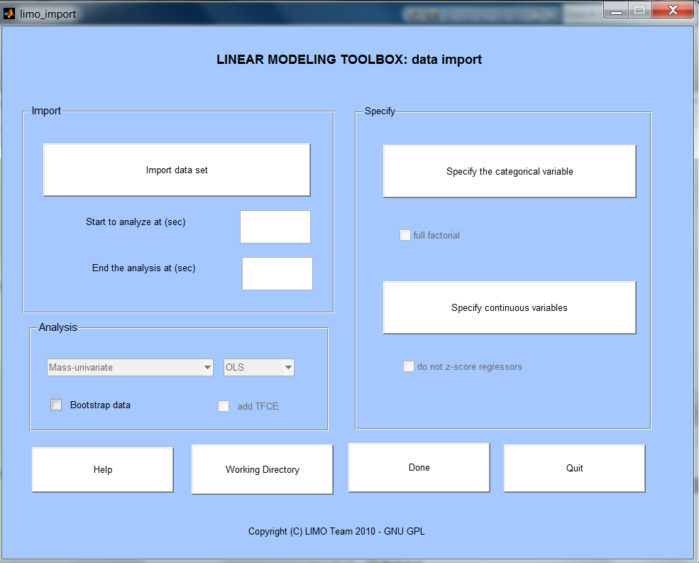

Import
LIMO_EEG analyses data for all
electrodes and data points – because it is computationally
demanding we also provide the option to only analyze a portion of the
data. A typical start and end would be -0.01 sec to 0.5
sec.
Specify
This is where you specify which conditions were presented to the subjects.
A categorical variable is a variable which has various levels as obtained e.g. in factorial designs. At this stage LIMO_EEG requires a text or mat file (usually coming from the log file of your experiment) describing those levels. In a typical 2*2 experiment with levels A1 A2 B1 B2, you would produce a text or mat file describing which condition was presented at each trial like e.g. 1 1 1 2 2 3 3 4 4 3 2 1 2 3 4 3 2 1 1. LIMO will interpret this as 4 conditions and re-organize trials accordingly. Most of the time, the best way to describe 1st level analyses is to describe each condition separately. However, you can specify factors rather than condition. In that case you .txt file or .mat file needs to contain 2 columns like e.g. 1 1 1 2 2 1 2 2 2 1 1 2 in the 1st column for the 1st factor with 2 levels and e.g. 1 2 2 1 2 1 2 1 2 for the 2nd factor with 2 levels. Don't worry about the actual numbers you use, LIMO only use then to index conditions so it doesn't have to be 1 2 3 etc ..
Full factorial: if more than 1 factor is entered (i.e. the categorical file used has more than 1 column) this option become availbale, allowing to create an interaction term.
A continuous variable is a variable which varies across all trials like in regression or parametric designs. At this stage LIMO_EEG requires a text or mat file (usually coming from the log file of your experiment) describing these variations.
There is also a box 'do not z-score regressors' which becomes availble once the continuous regressor file is loaded. Continuous variables are always standardized as to reflect effects expressed as standard deviations per voltage. In addition, scaling the variables allow meaniongful comparisons between them. It is recommended to always leave this box unticked unless you have good reasons (like having zscored your variable already).
Specify
For now the type of analysis availbale is only 'Mass-univariate' using 'OLS' (ordinary least squres). In future release multivariate analyses and weighted analyses will be available. These boxes are deactivated. Activate at your own risk.
Bootstrap data and tfce are available for single subject. For stamdard hierarchical modelling, only Beta parameters (or combinations of them) are necessay, so there is no need to estimate the null distribution per subjects. However, if you want to test effects within subject, you need to correct for multiple comparisons and bootstrapping is necessary.
Done
This will execute commands to create some files - in particular a LIMO.mat structure containing information about the subject, data, etc and Yr which the same data that are contained in the .set but now reorganized according to your design matrix - following pressing done the design matrix pop up and it you are happy with the design press 'yes' to get the analysis going
For further details on 1st level GLM see in the help directory the documents LIMO_mass_univariate.pdf and for details on the GLM function see LIMO_glm1.pdf